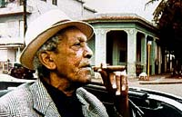
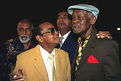

1. Salsa известна во всем мире. Buena Vista Social Club и Afro Cuban All Stars играют Son. В чем разница между Salsa и Son?

C 60х Salsa - это комерческое название для всей кубинской музыки. La Salsa - это кубинская музыка в другой обстановке, в которой есть музыкальные элементы других культур, например, из Пуэрто-Рико, Панамы или Колумбии. Но 90% ее ингридиентов составляет Son Cubano. Son Cubano намного более корневая музыка. Это оригинальная танцевальная музыка с Кубы, которая содержит многие элементы того, что мы называем Afro Cuban Style.2. Buena Vista Social Club и Afro Cuban All Stars - это группы подлинного Son?
Существуют две различные версии Son. Buena Vista Social Club - это группа традиционного Son/Sones Tradicionales, в соединении с некоторыми современными элементами, например электро-гитарой. Но они остаются весьма традиционными с точки зрения восточно-кубинского стиля. То, что они играют называется в восточной Кубе Son Montuno. Они звучат во многом также, как группы 40х. Звук Afro Cuban All Stars намного более современный. Эта разновидность называется Son Urbano с основным городом Гаваной.
3. Когда вы играете в Европе, Азии или Соединенных Штатах аудитория часто слушает вашу музыку как концерт классической музыки или джаза. Не странно ли это для вас, ведь Son изначально танцевальная музыка?
Для меня нет разницы реагируют ли люди, танцуя или только слушая. Я очень сильно ценю, когда люди действительно слушают, потому что в нашей музыке совсем немного элементов классической музыки или джаза. По сути, это классическая музыка Кубы. Очень часто, когда люди идут на Fiesta Salsa, они бывают навеселе. И если они в таком состоянии, их не сильно беспокоит качество музыки. Они хотят слушать мелодии, которые они знают. Но когда люди хотят слушать по-настоящему, я могу смешивать намного больше элементов.
4. Buena Vista Social Club и Afro Cuban All Stars - это новые группы или они существуют уже многие годы?
Нет, ни Afro Cuban All Stars, ни Buena Vista Social Club никогда не были группами как таковыми. Это проекты, в которых за этими годы мы поменяли много музыкантов. Это зависит от того, что мы сейчас делаем. К примеру, оригинальный состав Buena Vista Social Club выступал всего три раза. Один раз в Carnegie Hall и дважды в Амстердаме. На тех концертах мы играли оригинальный материал Buena Vista Social Club. Затем у нас повились другие формации, которые мы назвали Buena Vista Social Club Presents. С ними мы играем больше музыки 60х со звучанием саксофонов и кубинских джазовых бэндов. И есть много других стилей, для которых мы используем других музыкантов. В случае Afro Cuban All Stars мы отдаем дань 50м, эре по-настоящему великих музыкантов.
5. Однако у вас есть и постоянные участники в этих группах?
Конечно. Такие как Juan de Marcos Gonzalez, Ibrahim Ferrer, Ruben Gonzalez.
6. Какова ваша роль в этих группах?
Я - музыкальный руководитель.
7. А Ry Cooder?
Ry Cooder - продюсер альбомов. Он внес очень важный вклад. Мне казалось абсолютно невозможным сделать альбом, используя звучание 40х, потому что я вырос в 70е. Так что для меня музыка звучала по-другому. Эта идея принадлежала Ry Cooder. Ry Cooder по-настоящему важен для Buena Vista Social Club.
8. Buena Vista Social Club и Afro Cuban All Stars сейчас очень популярны во всем мире. Они попали в хит парад, даже в верхнюю десятку. Много ли дверей это открыло для вас?
Buena Vista Social Club и Afro Cuban All Stars подтолкнули кубинскую музыку обратно к тому месту, где она находилась до 1959. До кубинской революции. И это для меня наиболее важный факт. Потому что после кубинской революции все контракты с большими американскими компаниями были прекращены. Нас целиком исключили из рынка. Просто изолировали от всего мира. И теперь все эти парни снова зарабатывают деньги.
9. Так вы действительно получили деньги от альбомов и фильма?
Да, все не просто заработали, но получили очень много денег.
10. Было много слухов о том, что вас использовало кубинское правительство, оставив совсем немного денег, или что приходится хранить все заработанное за рубежом.
Нет, это не так. Все мои деньги в моей стране. Нет никаких причин хранить их, например, в Швейцарии. Я плачу налоги. Как и все остальные. Есть такие мифы, что Nick Gold (глава World Circuit Records) - вор, что кубинское правительство - вор и что они воруют деньги у музыкантов: все это ложь. Никто не ворует деньги кубинских музыкантов.
11. Вы путешествуете по всему миру. Большинство людей на Востоке уверены, что кубинцы только и думают, как бы оставить свою страну, однако хотя у вас были все возможности сделать это, вы всегда возвращались.

Конечно. Мы - кубинцы. Я имею в виду, что находиться в ссылке - это самоубийство. Потому что вы убиваете себя. Ваш дух и вашу душу. Это очень важно - возвращаться в свою страну, потому что если вы слышали мою музыку, вы знаете, что моя музыка абсолютно кубинская. Если бы я переехал в Майами или Нью-Йорк, я потярял бы свой дух. Там совсем другое окружение. И совсем другое в Манхэттене с его большими зданиями. Вот почему у большей части Salsa сегодня неаутентичное звучание. Потому что это не звучание тропиков.
12. Материал, который вы играете всегда оригинальный или появляется и новый?
Обычно я пишу четыре-пять песен к моим альбомам, остальное - классические хиты разных лет. Но даже в своих песнях я использую элементы сельских стилей различных периодов кубинской музыки. Мне нравится Моцарт. На своем первом альбоме я сочинил специальную тему для Ruben Gonzalez, она называется 'Classiciando with Ruben', и по стилю это абсолютная нео-классика. Я смешиваю все.
13. Происхождение названия Buena Vista Social Club об'яснено в фильме. Другой ваш проект называется Afro Cuban All Stars. Это подразумевает, что африканские корни на Кубе отличаются от подобных в Америке?
Они абсолютно разные, потому что в Америке колонизаторы убили дух Африки. На Кубе у нас есть афро-кубинские традиции, афро-кубинская религия и афро-кубинская музыка. Но, в действительности, Afro Cuban All Stars - это дань памяти одному из величайших афро-кубинских бэндов в Америке в 40-50, Machito and the Afro Cubans. Из-за того, что Machito один из моих идолов, я решил назвать группу Afro Cuban All Stars. Machito, Mario Bauza и Chico O'Farrill. Все эти биг-бэнды 40х и 50х в Америке и на Кубе, также Benny Moré, Latin Jazz Ensemble, они были первыми. Я люблю этот период кубинской музыки. Но африканские корни также очень важны для моей музыки. И для духа кубинской нации.